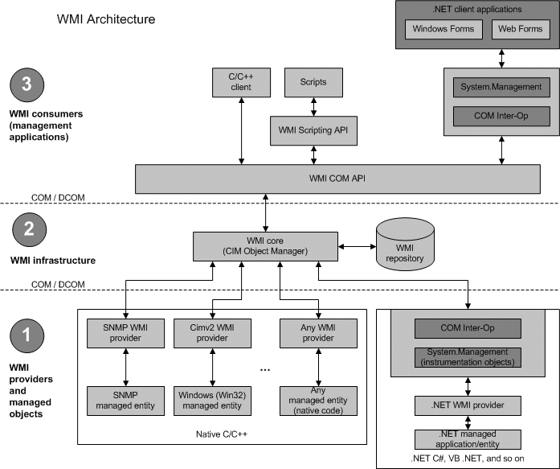
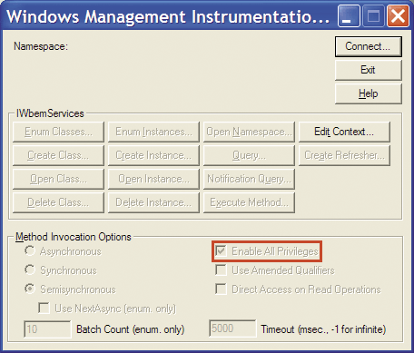
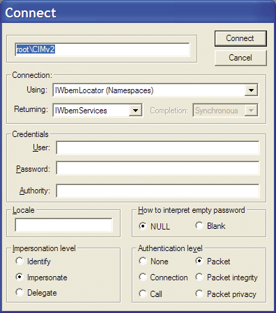
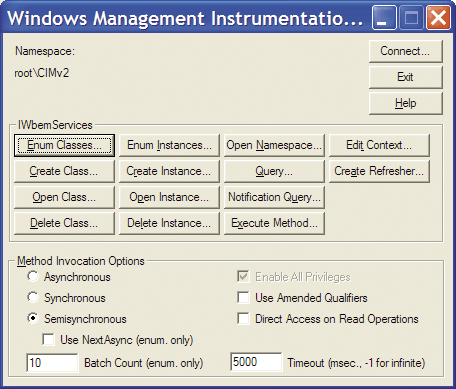
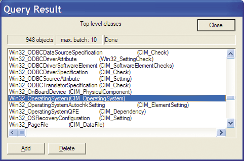
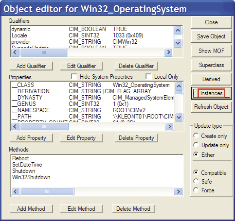
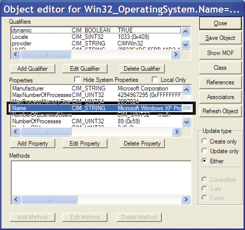
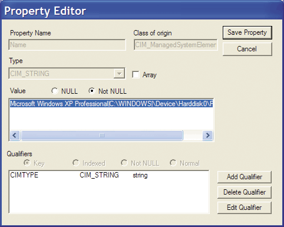
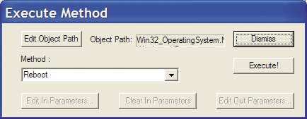
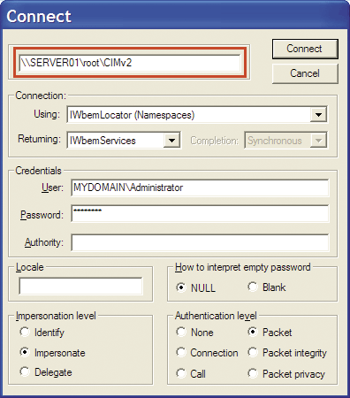

| Не знаете, что такое WMI? Тогда мы идем к Вам! |
|
| Добавил(а) AJEV | |||||||||||||||||||||||||||||||||||||||||||||||||||||||||||||||||||||||||||||||||||||||||||||||||||||||||||||||||||||||||||||||||||||||||||||||||||||||||||||||||||||||||||||||||||||||||||||||||||||||||||||||||||||||||||||
|
Хороший материал, взятый из журнала samag.ru [14], автор Константин Леонтьев. Тем, кто его до сих пор не читает, читать немедленно... [Вы всё ещё не используете WMI?]
Начиная карьеру системного администратора, Вы вероятно и не задумывались о том, что вместе с Вашим профессиональным ростом будет расти размер и сложность обслуживаемых систем. И вот наступил момент, когда вы поняли, что нужно принципиально новое решение, для того чтобы справляться с огромным количеством рутины, да ещё и в разных офисах вашей компании. Вероятнее всего, Вы уже немного знакомы с WMI на практике и используете некоторые готовые сценарии WMI для решения повседневных задач. Но согласитесь, что эффективное использование технологии начинается только тогда, когда вы понимаете ее архитектуру и четко представляете весь спектр возможностей, которые эта технология может вам предоставить. Основная моя цель – кратко изложить основы, необходимые для эффективного использования вами этой технологии и представить вам набор рецептов по ее применению в реальных условиях. Вы получите практический навык работы со всеми основными средствами WMI, выполнив несколько простых, но весьма полезных упражнений. Я предполагаю, что вы немного знакомы с программированием на VBScript и с азами языка SQL, а также имеете общее представление об объектно-ориентированном программировании. Обратите внимание на готовые примеры кода, которые помогут вам в Вашей работе. Что такое WMI? Формально: аббревиатура WMI – это Windows Management Instrumentation (инструментарий управления Windows). Из названия понятно, для чего создана и применяется эта технология. Стоит лишь добавить, что она давно перешагнула рамки управления только операционной системой Windows и позволяет контролировать множество других совместимых с ней приложений. По своей сути WMI – это расширенная и адаптированная компанией Microsoft реализация стандарта WBEM (WebBased Enterprise Management компании DMTF Inc [1]). В основе WBEM лежит идея создания универсального интерфейса мониторинга и управления к различным системам и компонентам распределенной информационной среды предприятия с использованием объектно-ориентированной идеологии и широко распространенных веб-технологий представления информации: протоколов XML и HTTP. Стандарт WBEM является правопреемником стандарта DMI (Desktop Management Interface). В основе структуры представления данных в стандарте WBEM лежит CIM (Common Information Model – модель информации общего типа), реализующая объектно-ориентированный подход к представлению компонентов систем как классов со своим набором свойств и методов, а также принципов наследования. Основное средство для описания новых элементов модели CIM – это синтаксис языка Managed Object Format (MOF), который является текстовым и легко понятным человеку. Таким образом, любое приложение или драйвер в операционной системе, которая поддерживает стандарт WBEM, может добавить к системной модели CIM свой набор классов. Такое расширение модели CIM позволяет легко интегрировать в единую систему мониторинга и управления все новые и новые приложения. Для этой интеграции приложение должно лишь зарегистрировать свои классы в существующей модели CIM и обеспечить стандартные вызовы встроенных процедур для создания объектов этих классов и наполнения их свойствами и методами. Набор этих процедур оформляется, как WMI Provider – специальная библиотека, являющаяся мостом между любым приложением и ядром службы WMI. Таким образом, WMI – это открытая унифицированная библиотека (репозиторий) однотипных интерфейсов доступа к параметрам, настройки и свойствам различных систем и их компонентов. Архитектура WMI представлена на рис. 1.  Рисунок 1. Архитектура WMI Многие производители программного и аппаратного обеспечения ведут разработку ПО в соответствии со стандартом WBEM. Как следствие, это ПО совместимо и с WMI, а значит, может управляться через единый и удобный интерфейс. Классы, объекты, свойства и методы Поскольку WMI построена по объектно-ориентированному принципу, то все данные об операционной системе, ее свойствах, управляемых приложениях и обнаруженном оборудовании представлены в виде объектов. Каждый тип объекта описан классом, в состав которого входят свойства и методы. Определения классов описаны в MOF-файлах, а объекты этих классов с заполненными свойствами и доступными методами при их вызове возвращаются WMI-провайдерами. Управляет созданием и удалением объектов, а также вызовом их методов служба CIM Object Manager. Получается, что если мы хотим управлять настройками сетевого адаптера, то мы должны запросить у CIM Object Manager экземпляр объекта нужного нам сетевого адаптера (забегая вперед, скажу, что этот объект принадлежит классу Win32_NetworkAdapterConfiguration) и вызвать нужные нам методы. В частности, для того чтобы обновить аренду адреса на DHCP сервере, достаточно вызвать метод RenewDHCPLease экземпляра объекта Win32_NetworkAdapterConfiguration. Обзор средств работы с WMI для администратора Начнем фактическое знакомство с WMI с обзора утилит, которые позволяют вам работать с WMI на ОС семейства Windows. Условно разделим этот набор утилит на поставляемые с операционной системой по умолчанию и набор утилит, которые потребуется скачивать с сайта компании Microsoft. К первой категории относятся следующие утилиты: • wmimgmt.msc – оснастка консоли MMC, позволяющая в целом управлять самой системой WMI на выбранном компьютере. Ко второй категории средств для работы с WMI, которые требуется дополнительно устанавливать, относится: • WMI Code Creator 1.0 – очень удобная и полезная утилита для создания готовых сценариев WMI. Поддерживает языки Visual Basic Script, C# и Visual Basic .NET [2]. Все утилиты, относящиеся ко второй категории, можно бесплатно скачать с сайта компании Microsoft по ссылкам, перечисленным в конце статьи. Полезно будет так же посетить раздел загрузки средств работы со скриптами [6] и общий раздел загрузки средств работы с WMI [7]. Для того, чтобы рассмотреть возможности и особенности всех средств работы с WMI, которые перечислены выше, не хватит и целого журнала, поэтому мы кратко остановимся на некоторых из них, на мой взгляд, наиболее полезных и (или) наиболее употребимых. Собственно, к таким я отношу следующие утилиты: WBEMTEST, WMIC, WMI Administrative Tools и довольно новую, но весьма полезную и удачную утилиту WMI Code Creator 1.0. Надо отметить, что существуют и другие утилиты и средства работы с WMI, в том числе разработанные не компанией Microsoft, однако формат статьи не позволяет нам на них останавливаться сколько-нибудь подробно. Об одном из этих средств я считаю своим долгом хотя бы упомянуть в этой статье – это ADSI Scriptomatic [8], позволяющее создавать скрипты для управления службой каталогов Microsoft Active Directory. Все примеры в этой статье протестированы на операционной системе Windows XP Service Pack 2, однако должны также корректно работать и на более ранних версиях OS Windows вплоть до Windows 2000. Если вам потребуется использовать WMI на более ранних версиях ОС Windows, то вам необходимо будет установить WMI Core Components 1.5 [9] и последнюю версию Windows Scripting Host [10, 11] на эти ОС. Знакомимся с утилитой WBEMTEST Чтобы прямо сейчас посмотреть, какой набор классов определен в репозитории WMI на вашем персональном компьютере, достаточно запустить утилиту wbemtest.exe и установить флажок «Enable All Privileges», как показано на рис. 2.  Рисунок 2. Основное окно утилиты WBEMTEST Далее нужно нажать кнопку «Connect…», в поле пространства имен вписать root\CIMv2, как это показано на рис. 3, и нажать кнопку «Connect».  Рисунок 3. Окно настройки подключения к репозиторию WMI утилиты WBEMTEST  Рисунок 4. Основное окно утилиты WBEMTEST после подключения к репозиторию WMI Затем нажмите кнопку «Enum Classes…», выберите «Recursive», не заполняйте поле суперкласса и нажмите «Ok». В результате вы получите список классов, определенный в вашем репозитории WMI, в пространстве имен CIMv2. Найдите среди всех класс с названием Win32_OperatingSystem (CIM_OperatingSystem), как это показано на рис. 5.  Рисунок 5. Окно результатов запроса со списком всех классов WMI пространства имен CIMv2 Дважды щелкните курсором мыши по классу Win32_OperatingSystem, посмотрите его свойства. Пример того, как это выглядит, показан на рис. 6.  Рисунок 6. Окно свойств класса Win32_OperatingSystem Далее нужно нажать кнопку «Instances» и в открывшемся окне дважды щелкнуть курсором мыши по строке в списке экземпляров операционных систем. В открывшемся окне свойств экземпляра операционной системы найдите свойство («Property») с названием «Name», как это показано на рис. 7.  Рисунок 7. Окно свойств экземпляра объекта класса Win32_OperatingSystem Дважды кликните по свойству курсором мыши. В открывшемся окне редактора свойств, которое показано на рис. 8, скопируйте отображаемое значение в буфер обмена. Оно пригодится нам в дальнейшем.  Рисунок 8. Окно со значением свойства Name экземпляра объекта класса Win32_OperatingSystem Далее закройте все окна, кроме основного окна программы wbemtest. В блокноте отредактируйте строку из буфера обмена следующем образом: - Заключите строку в кавычки. В итоге у вас должна получиться примерно следующая строка (в зависимости от версии ОС и логического диска, куда она установлена): Win32_OperatingSystem.Name="Microsoft Windows XP Professional|C:\\WINDOWS|\\Device\\Harddisk0\\Partition1" Теперь давайте выполним следующее упражнение с утилитой wbemtest. В уже открытом окне утилиты wbemtest нажмем кнопку «Execute Method…» и в окошко «GetObjectPath» вставим строку, которую мы подготовили в блокноте. В появившемся окне (см. рис. 9) вызова метода экземпляра объекта выберите метод Reboot и нажмите кнопку «Execute!».  Рисунок 9. Окно вызова метода для экземпляра объекта класса Win32_OperatingSystem утилиты WBEMTEST Поздравляю, Вы только что отправили свою операционную систему в перезагрузку, используя WMI. Если вы вдруг получили вместо перезагрузки сообщение об ошибке 0x80041062 «Privilege not held», то это означает, что вы забыли установить опцию «Enable All Privileges» до подключения к репозиторию WMI. Теперь следует сказать (пока Windows перезагружается), что при подключении к пространству имен WMI вы можете подключаться не только на локальной машине, но и как следует из обзора WMI к любой удаленной. Главное, обладать на той машине необходимыми правами. Но об этих правах позднее! Для подключения к удаленной машине в окне подключения достаточно в поле Name Space указать строку вида \\\root\CIMv2 и указать учетные данные пользователя, обладающего необходимыми правами (например, Administrator). Пример этого показан на рис. 10.  Рисунок 10. Окно подключение к пространству имен WMI с явным указанием имени сервера Не пробуйте подключаться к локальной машине, на которой запрашиваются объекты и методы WMI (например, на той, на которой сейчас выполняется утилита wbemtest), используя отличные от текущих учетные данные – все равно это у вас не получится. Это специальная защита для повышения локальной безопасности WMI, но о ней мы поговорим позже. Утилита WMIC Чтобы воспользоваться этой очень важной и полезной для администратора утилитой, достаточно запустить интерпретатор командной строки cmd.exe и в строке приглашения набрать WMIC. После этого у вас появится приглашение консоли WMI, как это показано на рис. 11. Рисунок 11. Командное окно с запущенной утилитой WMIC в интерактивном режиме Для получения справки по всем командам, доступным из консоли WMIC, достаточно в строке приглашения ввести команду «/?». Синтаксис каждой команды или глобальной опции вы можете посмотреть, введя ее название и знак вопроса. Например: process list /? Так мы работаем с утилитой WMIC в интерактивном режиме. Однако ничто не мешает нам использовать ее и в пакетном режиме из наших BAT/CMD-сценариев. Например, в приглашении командной строки CMD можно написать: wmic process list /? и получить тот же результат. Утилита WMIC создана для удобства использования WMI прямо из командной строки, поэтому наиболее употребимые классы WMI доступны для использования под псевдонимами (ALIAS). Вы можете самостоятельно определить псевдонимы для тех классов, для которых это еще не сделано, или добавить новые псевдонимы для тех классов WMI, которые уже их имеют. Список псевдонимов, которые определены на Windows XP Service Pack 2 по умолчанию с их кратким описанием, приведены в таблице 1. Таблица 1. Список псевдонимов утилиты WMIC и соответствие их классам WMI
Теперь давайте попробуем использовать утилиту WMIC для работы с WMI из командной строки. Для начала выйдите из интерактивного режима консоли WMIC командой exit. Вы оказались в среде командного интерпретатора CMD. В приглашении наберите команду: wmic process list brief Вы получите список процессов, запущенных на вашем локальном компьютере. Теперь выполните команду: wmic process list brief | find "cmd.exe" Теперь список процессов ограничен только теми процессами, в имени исполняемого модуля которых присутствует строка «cmd.exe». Обратите внимание на PID процесса(ов). Давайте попробуем отобрать интересующие нас процессы, используя непосредственно WMI и не прибегая к стандартным средствам командной строки. Для этого просто напишите: wmic process where description='cmd.exe' list brief Сравните полученные результаты. Запомните PID процесса CMD.EXE. Вызовем метод Terminate для экземпляра объекта WMI. Так мы завершим интересующий нас процесс в системе. Для того чтобы однозначно определить процесс, который мы хотим завершить, нам нужно использовать его PID или какой-либо другой набор атрибутов процесса, которые позволяют его однозначно отличить от множества других процессов в системе. Для завершения процесса нам нужно вызвать метод WMI. Для этого существует команда CALL. Для того чтобы вывести справку по всем методам, применимым к объектам типа PROCESS (Win32_Process), наберите команду: wmic process call /? Среди них обратите внимание на метод Terminate – он принимает в качестве единственного входного параметра значение типа UINT32 (беззнаковое 32-разрядное целое) в качестве индекса причины завершения процесса. В данном случае этот параметр аналогичен Exit-коду. Запустите четыре разных экземпляра процесса cmd.exe (откройте 4 командных окна). Еще раз выполните команду: wmic process where description='cmd.exe' list brief В результате вы получите в ответ примерно следующее: HandleCount Name Priority ProcessId ThreadCount WorkingSetSize Итак, чтобы завершить конкретный процесс, просто наберите: wmic process where processid='****' call terminate(0) вместо звездочек укажите PID нужного вам экземпляра процесса cmd.exe. Теперь давайте одной командой завершим все оставшиеся процессы cmd.exe, для этого просто введите команду: wmic process where description='cmd.exe' call terminate(0) Что за конструкция where и как еще ее можно использовать, мы разберем чуть позже в разделе «Язык запросов WQL». Для того чтобы подключиться к репозиторию WMI на другом компьютере и выполнять все те же действия, при условии, что наша учетная запись обладает достаточными правами, нам всего лишь нужно немного модифицировать нашу командную строку. Теперь наши команды должны выглядеть примерно так: wmic /NODE:server01 /USER:DOMAIN\Administrator /PASSWORD:qwerty /PRIVILEGES:ENABLE process where description='cmd.exe' list brief Если же вы хотите выполнить какие-то действия, используя WMI не с одним, а с целой группой компьютеров, то достаточно написать команду с использованием WMIC и ключом «/node:@serverslist.txt»: wmic /NODE:@serverslist.txt /USER:DOMAIN\Administrator /PASSWORD:qwerty /PRIVILEGES:ENABLE process where description='cmd.exe' list brief В файле serverlist.txt в столбец или в строку должны быть перечислены имена (IP-адреса) хостов, на которых необходимо выполнить это действие. В довершение краткого описания утилиты WMIC, следует сказать об еще одной, поистине замечательной, ее особенности – форматировании вывода. Практически все команды WMIC, которые возвращают информацию, могут ее форматировать разными способами. Для этого используется ключ «/format:». Форматирование производится с использованием технологии XSLT (шаблонов для преобразования XML). По умолчанию уже определен ряд готовых преобразований: CSV, HFORM, HMOF, HTABLE, HXML, RAWXML, TABLE, VALUE. Вы так же сами можете определить дополнительные шаблоны форматирования в формате XSLT и использовать их совместно с WMIC. Краткое практическое знакомство c WMI CIM Studio Это набор приложений Microsoft Internet Explorer, который позволяет с одной стороны очень тонко, с другой стороны довольно удобно работать с WMI. При этом вы можете как просматривать классы и вызывать методы, так и создавать события и даже модифицировать репозиторий WMI. Поэтому будьте очень осторожны. Если вы запускаете WMI CIM Studio на Windows XP Service Pack 2, то Internet Explorer предупредит вас о потенциальной угрозе безопасности. Вам следует разрешить заблокированное содержимое ActiveX. На рис. 12 показан вид окна WMI CIM Studio. Слева вы видите набор классов WMI и их иерархии в том пространстве имен WMI, которое вы выбрали при подключении. Справа перечислены все свойства выбранного класса. Все методы класса перечислены на закладке Methods, а на закладке Associations показана «родословная» этого класса и других классов, которые выведены из него.
Рисунок 12. Окно утилиты WMI CIM Studio с открытыми свойствами класса Win32_OperatingSystem Если вы хотите посмотреть все экземпляры объектов выбранного класса, существующие в вашей системе, то достаточно нажать кнопку со значком списка (четвертая справа кнопка в правой панели кнопок). WMI CIM Studio очень удобный инструмент для поиска классов и свойств в огромном море репозитория WMI. Для поиска нажмите кнопку со значком бинокля и введите шаблон для поиска, например «network». Выберите область поиска (Class names, Class description, Property names) и нажмите «Go!». В целом WMI CIM Studio очень хороший инструмент для поиска и исследования репозитория WMI и для интерактивного анализа состояния экземпляров объектов WMI. Язык запросов WQL Теперь нам следует разобраться, что же такое WQL, а также каким образом в разделе, где описана работа WMIC, мы делали выборку объектов WMI по определенным критериям. Разбирая эту тему, полезно вспомнить, что объектно-ориентированная модель представления данных хорошо ложится на структуру реляционных баз данных. В частности можно провести следующие аналогии: определение таблицы данных (поля и их типы) – это классы объектов, строки в конкретной таблице – это экземпляры объектов данного класса. Каждое поле (столбец) в таблице – это свойство всех объектов данного класса. Каждая ячейка в конкретной строке – это свойство (property) конкретного экземпляра объекта. Связи таблиц и представления можно рассматривать как частный случай наследования. Триггеры и встроенные процедуры исходя из этой аналогии – это методы классов. Собственно, для того чтобы удобно было работать с множественными экземплярами объектов WMI, используется язык WMI Query Language (WQL), который является подмножеством ANSI SQL. Основное отличие WQL от ANSI SQL состоит в том, что WQL не позволяет производить изменения в данных WMI, т. е. фактически в WQL поддерживается лишь один оператор SQL: select. Кроме того, в операторе select языка WQL не поддерживаются следующие ключевые слова: DISTINCT, COUNT, JOIN, SUBSTRING, ORDER BY, UPPER, LOWER и DATEPART (эти ключевые слова поддерживаются в варианте Extended WQL (eWQL), реализованном в Microsoft SMS 2.0 и SMS 2003). Не поддерживаются арифметические операторы. Кроме того конструкции IS и IS NOT могут применяться только в сочетании с константой NULL. Языком WQL поддерживается оператор LIKE. Более подробно про шаблоны, применяемые совместно с оператором LIKE в WQL, можно ознакомиться в оригинальном описании WMI на сайте Microsoft [12, 13]. Ниже приведен пример некоторых типичных WQL-запросов: SELECT * FROM Win32_LogicalDisk WHERE FileSystem IS NULL SELECT * FROM Win32_LogicalDisk WHERE FileSystem IS NOT NULL SELECT * FROM Win32_LogicalDisk WHERE FileSystem = "NTFS" SELECT * FROM Win32_DiskDrive WHERE Partitions < 2 OR SectorsPerTrack > 100 SELECT * FROM Win32_LogicalDisk WHERE (Name = "C:" OR Name = "D:") AND FreeSpace > 2000000 AND FileSystem = "NTFS" SELECT * FROM Win32_NTLogEvent WHERE Logfile = 'Application' SELECT * FROM Meta_Class WHERE __Class LIKE %Win32% SELECT * FROM __InstanceCreationEvent WHERE TargetInstance ISA "Win32_NTLogEvent" GROUP WITHIN 600 BY TargetInstance.SourceName HAVING NumberOfEvents > 25 Вы можете поупражняться в запросах WMI с помощью уже хорошо известной вам утилиты WBEMTEST, нажав кнопку «Query» в ее главном окне. Теперь вспомните утилиту командной строки WMIC, функции которой мы разбирали немного выше. В ее синтаксисе также могут использоваться WQL-запросы для удобства работы с наборами объектов одного класса. Чтобы использовать уже имеющиеся и проверенные WQL-запросы (большинство из них удобнее всего проверять утилитой WBEMTEST), из командной строки достаточно отбросить у WQL-запроса первую часть: «select * from». Затем заменить имя класса на его алиас (псевдоним) из таблицы 1 и при необходимости добавить после запроса вызов метода, формат вывода списка или запрос свойства объекта. Примеры того, что при этом получается, я уже приводил выше. Если же среди псевдонимов в таблице 1 нет нужного вам класса, то есть два пути решения. Первый – добавить новый псевдоним для нового класса. Этот путь хорош, если с этим классом из WMIC вы будете работать только на этом компьютере. Если же вы хотите использовать команду wmic на разных компьютерах, в том числе и на тех, на которых такой алиас вы не определяли, то можно воспользоваться вторым способом. Второй способ позволяет явно использовать настоящее имя класса WMI при обращении к нему с помощью WMIC. Для этого используйте следующий синтаксис: wmic path Win32_LogicalDisk WHERE FileSystem='NTFS' get /value Заключение Во второй части статьи [15] обсудим написание сценариев с использованием WMI и WSH. Будут разобраны особенности использования WMI в скриптах, из тех, которые обычно вызывают наибольшие затруднения у людей, начинающих работать с этой технологией. К таким темам я отношу: построение moniker string, использование различных пространств имен WMI, связка WMI и COM, использование различных языков программирования вместе с WMI, имперсонация, аутентификация и привилегии. Наконец, наиболее интересные моменты, связанные с подключением к удаленным компьютерам и обработкой системных событий с помощью WMI. В заключении мы обсудим готовые продукты, использующие WMI и стратегию развития этой технологии, а так же ее применения в информационных системах предприятий. [Ссылки и литература] 1. Distributed Management Task Force Inc. site:dmtf.org. |

{kind=link}